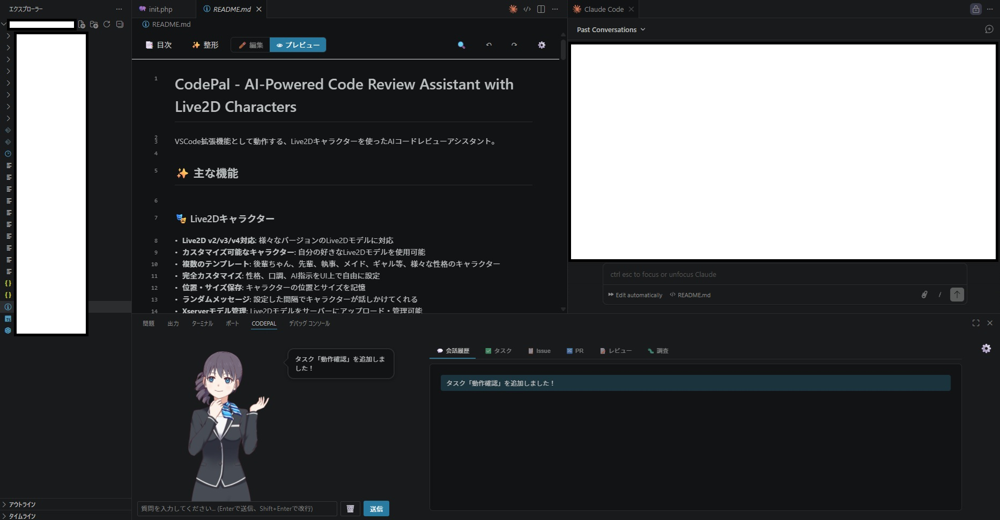
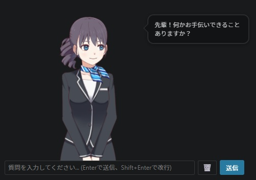
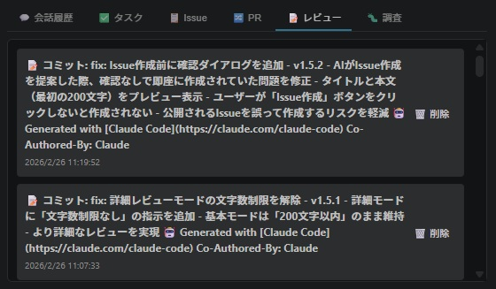
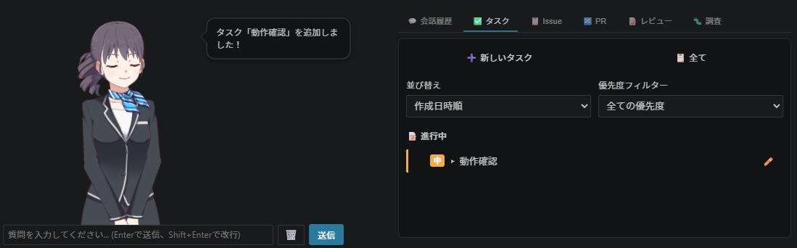

VSCodeのパネル内にLive2Dキャラクターが常駐するAIコードレビューアシスタント。コミット時の自動レビューやGitHub連携を、キャラクターとの会話で操作できる開発支援ツール。




VSCode WebView APIを使いパネル内でLive2DキャラクターをPixi.jsでレンダリング。拡張機能のコンテキストとWebView間のメッセージパッシングで、AIレビュー結果やGitHub情報をリアルタイムに反映している。
simple-gitでコミット差分を取得しAI APIに渡すことで、コミット内容を自動解析したレビューを実現。Gemini / Claude / OpenAI のプロバイダーを設定で切り替えられるよう抽象化した。
キャラクターの性格タイプごとにシステムプロンプトを定義し、レビュー文体・アイドルメッセージ・インタラクションメッセージを変化させることで、キャラクターとしての一貫性を保った。